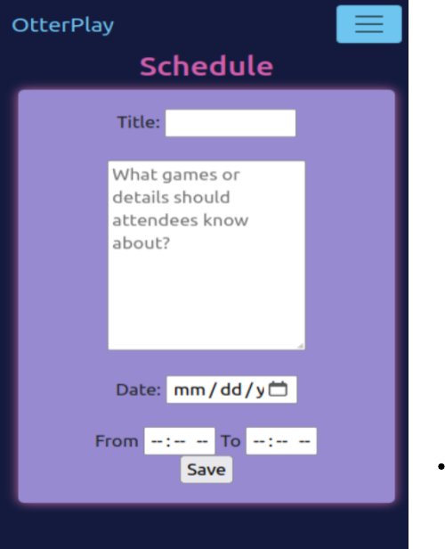
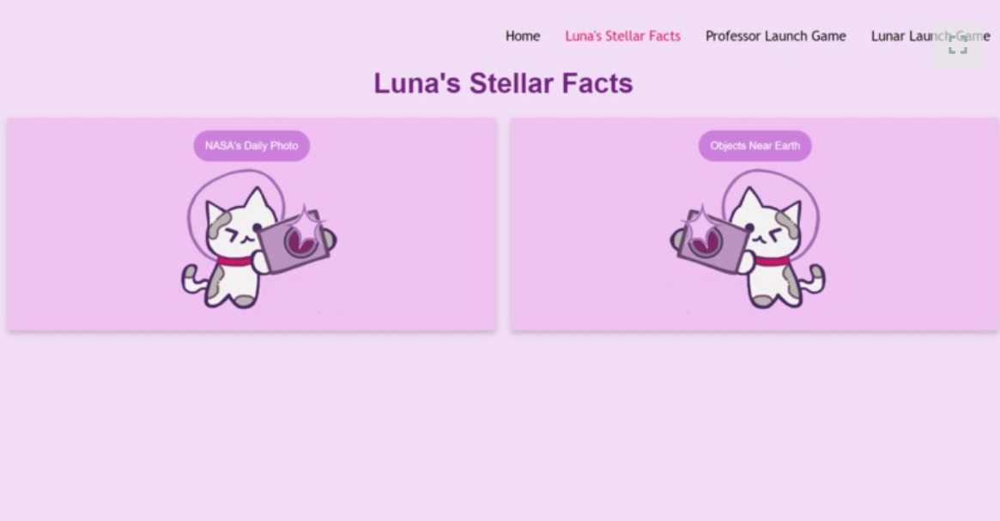
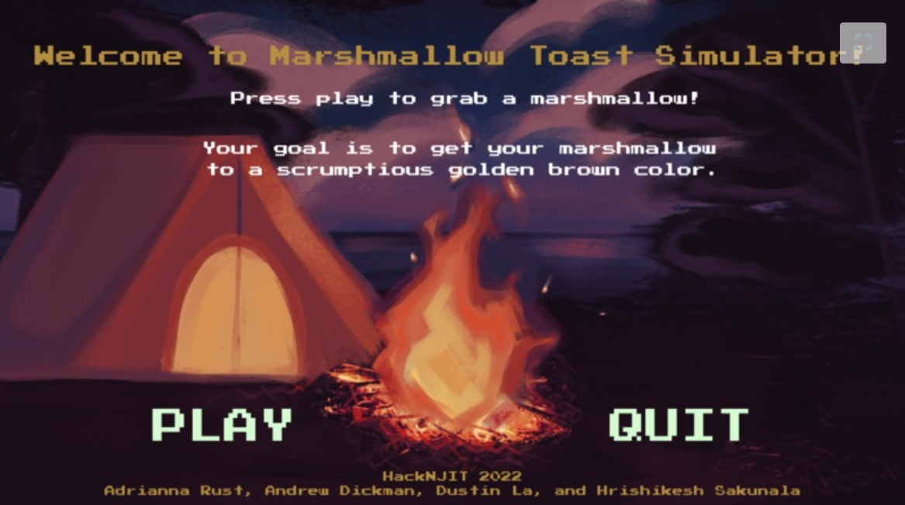
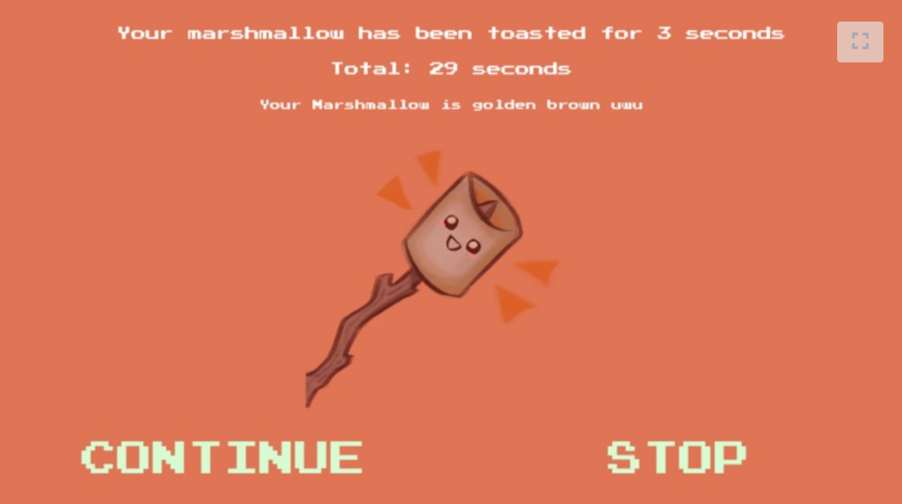

My Projects
- System Integration Project 2023 -- OtterPlay
- GirlHacks 2023 -- LunaTech: Space Information & Simulation Hub
- HackNJIT 2022 -- Marshmallow Toast Simulator
Small description of projects below !
System Integration Project -- OtterPlay
Basic Summary:
For this project I was required to develop a system using virtual machines to host a functioning website on a server, implement working authentication, create databases to store user information, and use RabbitMQ as a queuing system. The idea behind the project was to create a positive environent for online gaming by helping users find and match with other users instead of randomly being matched with toxic players.
Lessons I learned:
- The basic architecture of a system and each component
- Working more with manipulating API and storing fetched information in a Database
- More experience using JavaScript to write functions and forms in the front-end
- Using PHP to communciate between databases and the queuing system
GirlHacks 2023 -- LunaTech: Space Information & Simulation Hub
Basic Summary:
I competed in a GirlHacks hackathon with a team and together we created a space themed website that shares an astronomy fact that updates each day as well as asteroids are orbiting Earth. The website also includes mini-games where the user can send a professor or an astronaut into space. My team ended up winning first place in the competition for this project.
Lessons I learned:
- Working with API for the first time, fetching from the NASA API in order to get daily space facts and astroid information
- Organizing tasks quickly with Jira and communicating with my team in order to finish the project within the 24 hour time limit
- Improving my problem solving by recognizing a data source error that broke the code and implementing a solution
HackNJIT 2022 -- Marshmallow Toast Simulator
 Basic Summary:
I competed in a HackNJIT hackathon with a team and together we created an interactive game with a Python extension, Pygame that prompts the player to try and roast a marshmallow. There are options to select different cooking durations, each duration being a random number pulled from a set range. The player wins if their marshmallow is golden brown, and loses if it is burnt. My team ended up winning "Best Camping Themed Hack" in the competition for this project.
Lessons I learned:
- How to use Pygame for the first time within the 24 hour time limit in order to add screens, functionalities, and graphics
- How to integrate my team's Python script (for the math behind the duration functions) into the screens I was coding